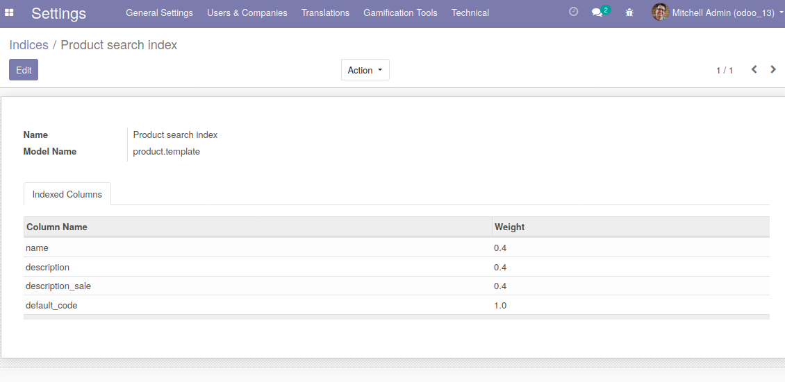
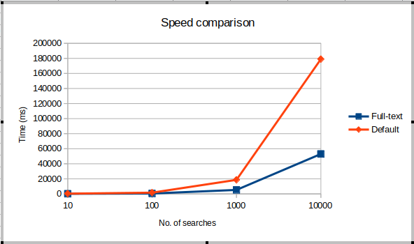
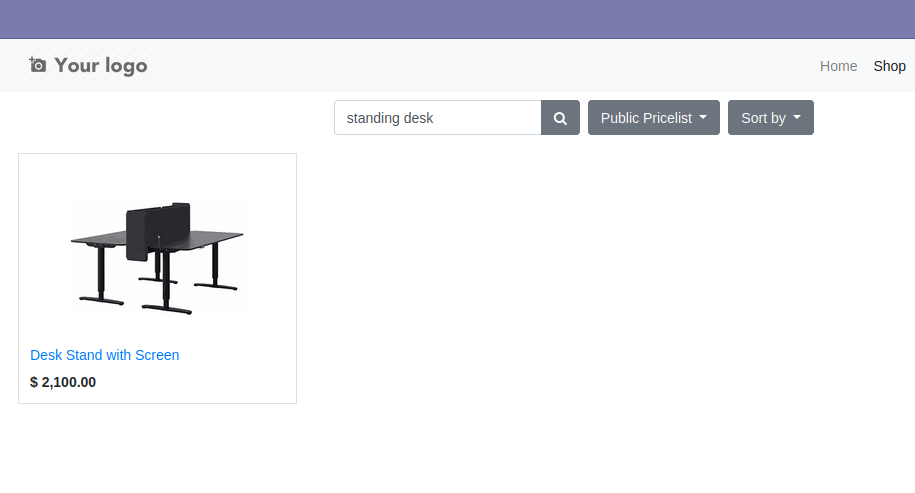

Automatically replace default substring search with full-text search. Columns to be indexed and weight assigned to each is configurable in Setting > Technical > Full Text Index.
Create full-text index on products' data for faster search and reduce workload on database.
Full-text search index is updated automatically as products' information changes.
Speed difference is shown in the chart below comparing Odoo's default ecommerce product search with full-text based product search.
Stemming performed as part of full-text search indexing allows words to be matched by its origin form. For example, searching for "Standing Desk" can results in "Desk Stand".
Automatically use prefix matching for short query token.
Rank search results by relevance to query.
Email: sale@beolla.com
Website: beolla.com